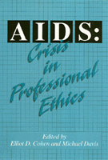

Professionals face tough questions raised by the AIDS pandemic
Professionals face tough questions raised by the AIDS pandemic


 Professionals face tough questions raised by the AIDS pandemic
Professionals face tough questions raised by the AIDS pandemic

|  |
AIDSCrisis in Professional Ethicsedited by Elliot D. Cohen and Michael Davispaper EAN: 978-1-56639-165-8 (ISBN: 1-56639-165-2) |
"[S]tudents and professionals, [as well as] the general reader will find much food for thought."
—Publishers Weekly
Do patients have the right to know their physician's HIV status?
Can a dentist refuse treatment to an HIV-positive patient?
How do educators determine whether to allow an HIV-positive child to attend school, and if they do, should the parents of other children be informed?
Should a counselor break confidentiality by disclosing to a wife that her husband is infected with HIV?
This collection of original essays carefully examines the difficult moral choices the AIDS pandemic has presented for many professionals—physicians, nurses, dentists, teachers and school administrators, business managers, psychotherapists, lawyers, clergy, journalists, and politicians. In the workplace, problems posed by HIV and AIDS have led to a reexamination of traditional codes of ethics. Providing systematic and reasoned discussions, the authors explore the moral, legal, and ethical issues involved in the reconsideration of policies, standards of conduct, and the practicality of balancing personal and professional ethics.
Introduction
1. AIDS: Moral Dilemmas for Physicians – Albert Flores
2. Nursing and AIDS: Some Special Challenges – Joan C. Callahan and Jill Powell
3. The Dentist's Obligation to Treat Patients with HIV: A Patient's Perspective – Michael Davis
4. HIV and the Professional Responsibility of the Early Childhood Educator – Kenneth Kipnis
5. AIDS in the Workplace: Options and Responsibilities – Al Gini and Michael Davis
6. Leading by Example: AIDS Policy and the University's Social Responsibility – Howard Cohen
7. What Would a Virtuous Counselor Do? Ethical Problems in Counseling Clients with HIV – Elliot D. Cohen
8. The Attorney, the Client with HIV, and the Duty to Warn – Martin Gunderson
9. AIDS: A Transformative Challenge for Clergy – Joseph A. Edelheit
10. Journalistic Responsibilities and AIDS – Michael Pritchard
11. AIDS and a Politician's Right to Privacy – Vincent J. Samar
A Bibliography on AIDS and Professional Ethics – Sohair ElBaz and William Pardue
About the Contributors
Index
Elliot D. Cohen is Professor of Philosophy at Indian River Community College and Editor-in-Chief of the International Journal of Applied Philosophy.
Michael Davis is Senior Research Associate at the Center for the Study of Ethics in Professions, Illinois Institute of Technology.
Contributors: Albert Flores, Joan C. Callahan, Jill Powell, Kenneth Kipnis, Al Gini, Howard Cohen, Martin Gunderson, Joseph A. Edelheit, Michael Pritchard, Vincent J. Samar, Sohair ElBaz, William Pardue, and the editors.
General Interest
Philosophy and Ethics
© 2015 Temple University. All Rights Reserved. This page: http://www.temple.edu/tempress/titles/988_reg.html.